119 תמרורים, מצוירים מחדש לפי לוח התמרורים הרשמי (הודעת התעבורה (קביעת תמרורים), התשע״א-2010, נוסח משולב 2020). נוצר על ידי pnpm content:signs.
תמרורי אזהרה והתראה (1xx) 20
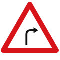
102 עקומה חדה ימינה
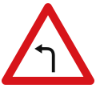
103 עקומה חדה שמאלה
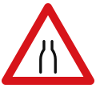
109 הכביש הולך וצר
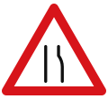
110 הכביש הולך וצר מצד ימין
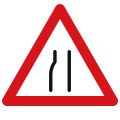
111 הכביש הולך וצר מצד שמאל
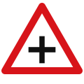
114 צומת הצטלבות
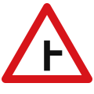
115 צומת קמץ — דרך מימין
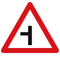
116 צומת קמץ — דרך משמאל117 צומת קמץ (T)
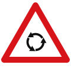
121 מעגל תנועה לפניך
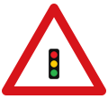
122 רמזור לפניך
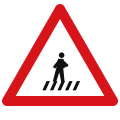
135 מעבר חצייה בקרבת מקום
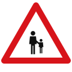
136 הולכי רגל בקרבת מקום
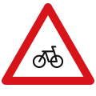
137 תנועת אופניים בקרבת מקום
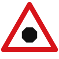
139 תמרור עצור בהמשך הדרך
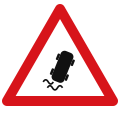
141 סכנת החלקה144 פסי האטה
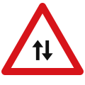
145 תנועה דו-סטרית150 מקום מסוכן
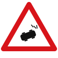
151 תאונה
תמרורי הוריה (2xx) 21
201 סע ישר או ימינה202 סע ישר או שמאלה203 סע ישר204 פנה ימינה לפני התמרור205 פנה שמאלה לפני התמרור206 פנה ימינה אחרי התמרור207 פנה שמאלה אחרי התמרור208 סע ימינה או שמאלה209 סע ישר או בפניית פרסה ימינה210 סע ישר או בפניית פרסה שמאלה211 סע בפניית פרסה ימינה212 סע בפניית פרסה שמאלה213 עבור מימין או משמאל214 עבור מימין215 עבור משמאל
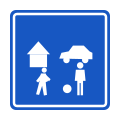
220 רחוב משולב
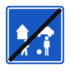
221 קצה רחוב משולב
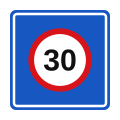
222 אזור מיתון תנועה
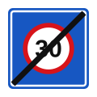
223 קצה אזור מיתון תנועה226 שביל להולכי רגל בלבד227 שביל לאופניים
תמרורי זכות קדימה (3xx) 8
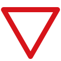
301 תן זכות קדימה302 עצור303 מעגל תנועה
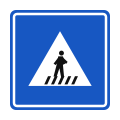
306 תן זכות קדימה להולכי רגל החוצים307 תן זכות קדימה בקטע דרך צרה308 זכות קדימה בקטע דרך צרה309 זכות קדימה בדרך310 קצה הדרך שבה יש לך זכות קדימה
תמרורי איסורים והגבלות (4xx) 18
401 כביש סגור402 אין כניסה418 אזור אסור ללימוד נהיגה419 קצה האזור האסור ללימוד נהיגה
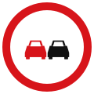
420 אסור לעקוף
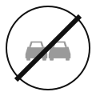
421 קצה קטע איסור העקיפה424 אזור דרכים עירוניות425 קצה אזור דרכים עירוניות
434 קצה קטע איסור החניה/העצירה437 חניה לרכב של נכה
תחבורה ציבורית (5xx) 8
501 נתיב לתחבורה ציבורית
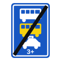
502 קצה נתיב לתחבורה ציבורית503 סימון נתיב לתחבורה ציבורית (קו קטעים)504 התנועה בכיוון החץ הלבן מותרת לכל רכב505 תחנת אוטובוסים
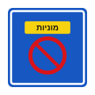
507 תחנת מוניות511 אבני שפה אדום-צהוב (תחנת אוטובוס)515 סימון נתיב לתחבורה ציבורית (קו רצוף)
תמרורי מודיעין והדרכה (6xx) 10
613 הגדרת תנועות בנתיבים618 כביש חד-סטרי621 מספר הנתיבים קטן — מימין622 מספר הנתיבים קטן — משמאל
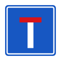
623 כביש ללא מוצא624 כביש ללא מוצא מימין625 כביש ללא מוצא משמאל626 חניה לכלי רכב627 חניה על המדרכה
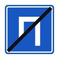
628 קצה המקום המותר לחניה
רמזורים ובקרת נתיבים (7xx) 14
701 אור אדום702 אור אדום וצהוב יחד703 אור ירוק703f אור ירוק מהבהב704 חץ ירוק705 אור צהוב
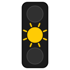
706 אור צהוב מהבהב
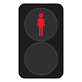
718 אור אדום להולכי רגל
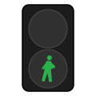
719 אור ירוק להולכי רגל
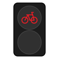
720 אור אדום לאופניים
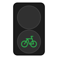
721 אור ירוק לאופניים722 אור אדום מהבהב כפול לפני מפגש מסילה723 נתיב סגור724 נתיב פתוח
סימון על פני הדרך (8xx) 18
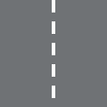
801 קו נתיב / קו ציר הכביש — קו קטעים803 קו הפרדה רצוף כפול
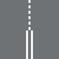
805 קו קטעים צפוף — אזהרה לפני קו הפרדה רצוף
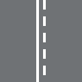
806 קו קטעים ליד קו רצוף807 קו שפה — קו רצוף צהוב
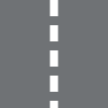
808 קו מלבנים לבן — נתיב ייעודי809 קו הנחיה בצומת810 קו עצירה811 מעבר חצייה להולכי רגל
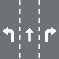
813 חצי כיוון בנתיב
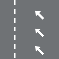
814 נתיב נסיעה העומד להסתיים815 אי תנועה מסומן על הכביש816 אבני שפה שחור-לבן817 אבני שפה כחול-לבן818 אבני שפה אדום-לבן819 מקומות חניה מסומנים על המדרכה820 מקום אסור לחניה821 פס האטה